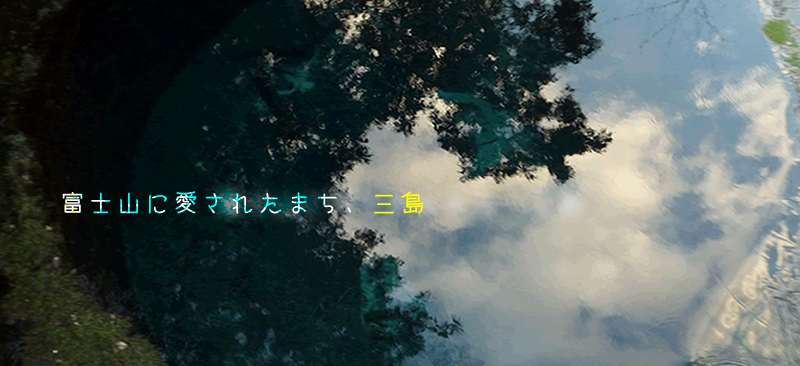
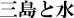

三島市は、静岡県東部に位置する街です。 伊豆の真上にあることから『伊豆の玄関口』とも呼ばれ、東京から新幹線で１時間で来ることができます。 この街の自慢は、なんといっても豊富で綺麗な『水』にあります。 市内には、たくさんの湧水スポットがあり、市民によって保護されています。 この水は主に富士山の地下水が湧いてでたもので、富士山から三島の約４０Kmを数十年かけてろ過してきます。 不純物がなくなりミネラル豊富になったその水の美味しさは、「水の郷百選」「平成の名水百選」に選ばれるほど。 駅の近くにも湧水が湧いているため、日帰りの観光客も多いです。 しかし、あまりにも湧水スポットが多いためどこから観光していいかいまいちわかりません また、三島は広い街なため遠方からの日帰り観光客は移動が不便だという不満もあります。 そこで当サイトでは、三島の水を日帰りで堪能できるコースを巡ってみました。
三島駅南口をでてすぐにある超駅チカ公園、『楽寿園』。大人一人300円、自然、水、動物たちと触れ合いましょう。
アルパカのクララちゃん。なぜか前足を伸ばしていて可愛らしいです。とっても眠そう。
園内には小川や池が何個もあります。これはその内の一つの小川で、水の中に三島梅花藻が生えていました。
丁度日が傾きかけてきた、『こもれびばし』を訪れてみましょう。名前のとおり、こもれびが差して気持ちがいいです。
『こもれびばし』にはカモが沢山住んでいます。すぅーっと泳いてたり、潜ってご飯を探してたり、羽に顔を埋めて寝ていたり。
『楽寿園』は三島駅南口すぐ前にある国立公園です。有料ですが、大人300円子ども50円と特別高くないので、家族連れや子どもが多いです。園内には動物園並に動物が飼育されており、直接手で触れる、ふれあいコーナーもあります。一昔前、山から降りてきて市民にいたずらしてお騒がせした、サルのラッキーくんも保護されています。また、園内には多数の湧水が湧いており、池や小川がたくさんあります。中でも、小浜池は楽寿園で一番の見もの。ですが、近年満潮になるのに年単位の時間がかかるため水が湧いているところは滅多に見られません。しかし、その水面に映る楽寿館は、つい写真に撮りたくなる美しさです。
ずっと続く川の中にある石の通り道。
川底がはっきり見えるほど、透き通っています。
三島梅花藻のつぼみもちょこっと見られます。三島のこの水でしか咲かない、繊細なお花です。
源兵衛川（げんぺいがわ）は、三島を代表する川の一つです。 楽寿園を出ると長く一本に始まる川であり、石や木でできた遊歩道が続きます。 澄んだ冷たい水が流れており、夏は地域の子どもたちが水遊びをして遊んでいる声が聞こえたり、お盆近くの夜には、ホタルが宙を舞う様子も見受けられます。 また、綺麗な水にしか咲かない三島梅花藻（みしまばいかも）も咲いています。 周りは閑静な住宅に囲まれており、静かに川のせせらぎを楽しむことができます。

三島市民なら誰でも知ってる、街のパン屋さん『グルッペ』。
店員さんイチオシの春の新作、「まんぷくどらやき」。中のあんこは甘さ控えめで、甘いのが苦手な方にも美味しいです。
三島で栽培されたジャガイモを使用した、いわゆるご当地グルメの「みしまコロッケ」。
ブラックペッパーが効いてて美味しいです。
広小路商店街の中にある大人気のパン屋さん。 ご当地グルメ「みしまコロッケ」や、 普通のパン屋さんではあまりみかけることのない、メロンパンラスクがおすすめです。 購入したパンを店内で食べることできます。 お店の外に販売に行ったりもしていて、私の出身高にもお昼の時間に購買でパンを販売してました。 この商店街にはパン屋さんが3件ありますが、一番美味しいと思います。
富士山から約40kmも離れた公園に湧く、柿田川湧水。
湧き出している場所はそこだけ井戸のように深くなっており、美しい青色をしています。
湧きでた水は柿田川として流れていきます。
柿田川は、三島市清水町にある『柿田川公園』の中で湧きでた水からなる川です。 毎日60トンもの水が湧き出しており、三島市の水道水としても活用されています。 写真の場所は、柿田川公園第2展望台。 園内には他にも湧水スポットがありますが、ここだけ深い青色をして、その謎は現在調査中だとのこと。 三島駅からサントムーン柿田川経由のバスに乗り、サントムーン柿田川前のバス停から徒歩3分。 駅から20分ほどかかってしまいますが、三島に来たなら訪れるべきです。
三島は「うなぎ」も有名です。ここ、「鰻処 桜家」は三島を代表する老舗うなぎやさん。
メニューを見ると、やはりそれ相応のお値段。
うな重を頼んでみました。うなぎの肝のお吸い物とお漬物がつきます。
桜家秘伝のタレが美味しく、山椒の風味が鼻に抜けて味を引き立てます。
『鰻処 桜家』は安政3年創業、三島有数の老舗うなぎやさんです。
長い歴史からなる信頼とその美味しさから、お店の前には連日行列ができており、お忍びで芸能人の方も訪れるほどの人気です。
三島のうなぎはなぜ美味しいのか、お店の方に訪ねてみました。
”三島の水はミネラルたっぷりで冷たい水で、そこで育てられたうなぎはとっても身が引き締まって脂がのるんです。だからおいしいんですよ。”
三島の水は、自然の素材の味も引き立てる美味しさなのですね。
【新幹線】
東京駅ー[こだま]ー三島駅 約1時間
【電車】
新宿駅ー[小田急線]ー小田原駅ー[東海道線]ー三島駅 約3時間
【バス】
新宿駅ー[三島エクスプレス]ー三島駅 約２時間
【車】
東京ICー沼津IC 約２時間半